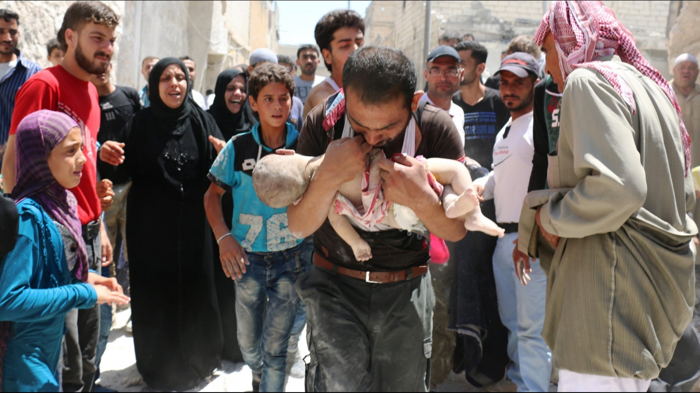

真實世界中的他們
難民乘船抵達希臘
人們走到難民營登記等候

位於敘利亞的城市阿勒坡(Aleppo)，處處可見逃難的人民

敘利亞
截至2017年3月，逃離敘利亞的難民人數超過500萬人，另有630萬人在敘利亞境內流離失所，總計1,100多萬人飽受戰火的煎熬。
土耳其
近三年，土耳其境內已經滯留超過三百萬的敘利亞難民，他們僅有少數能夠幸運的申請到難民營，其餘的只能棲身露宿街頭。
希臘
希臘國會以169票對107票通過「歐盟-土耳其遣返方案」，同意遣返非法進入並滯留在希臘境內的移民（migrant）。第一波遣返行動正式啟動，202名不符庇護資格者被送回土耳其。
匈牙利
2015年9月，匈牙利實施新法並動員防暴警察驅散依然滯留在塞爾維亞邊境的難民。 匈牙利政府於接壤塞爾維亞邊境修建了一道長達117公里的4米高圍牆，且加設尖刺鐵絲網。
2015年10月全面關閉了接壤克羅地亞的邊境，以堵截難民非法闖關。
德國
德國總理梅克爾表示接收難民「不設上限」。德國估計，地方政府安置1名難民的成本在1萬2000至1萬3000歐元之間，當中包括申請庇護期間的住宿、三餐、醫療照護與每月143歐元的零用金。
瑞典
2014年約8萬1000人向瑞典尋求庇護，僅次於德國，其中以敘利亞難民最多。2015年11月起，瑞典政府收緊難民政策，不像以往通常可獲永久居民身分，大部分2015年抵達瑞典的難民，僅獲准暫時居留。